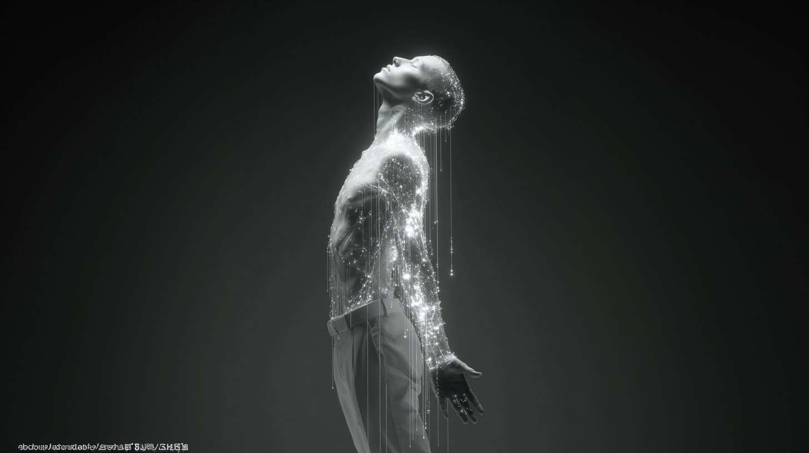

It started with a refusal to sleep.
Introduction
I'm Shira Sarid, an AI explorer, creative strategist, and a believer in the power of focus. I am not a neuroscientist, nor a coder. I am a researcher of human resilience.
ECHO.11 is my digital laboratory, built on a simple premise: In an age of artificial intelligence, our most powerful tool remains the human mind.
My mission is to explore how we can use smart tools to regain control, bridge the gender gap in tech, and design a "quieter," more intentional digital future.
The Origin Story: Finding Silence in the Chaos of 2025
During the conflict with Iran in mid-2025, the nights became a source of terror. Waiting for the siren to wail meant subjecting my body to repeated shocks, throwing my nervous system off balance. I realized that if I couldn't control the situation outside, I had to control my internal state.
Instead of waiting for the alarm, I stayed awake. I turned to my computer and started creating. Using Midjourney for visuals and Runway for motion, I combined AI-generated art with specific sound frequencies—a technique I had used for years to battle insomnia.
The discovery was profound: Designing with AI forced my brain to hyper-focus. It shifted my attention from negative loops of fear to positive loops of imagination. When I shared these videos on Instagram and TikTok, the response was overwhelming. Strangers wrote to me that these "digital signals" helped them regulate their own nervous systems and fall asleep after nights of panic.
That was the moment I understood: AI isn't just a productivity tool; it's a mechanism for mental regulation.

Shattering the Myths: AI is for Everyone
My personal journey of mental and physical transformation taught me one thing: The brain is plastic. It can change.
Today, we are surrounded by myths that keep us small. The biggest one? That AI is "too technical" or "too complex." I see too many women stepping back from this revolution, intimidated by the terminology. The gap between men and women in the generative AI space is widening, and I am here to close it.
Here is the truth: If you can imagine it, you can build it. Learning to prompt a machine is just like learning a new language—it requires focus, not a degree in computer science.

What I Explore Here
ECHO.11 is a curated space for "Quiet Branding" and strategic foresight. In a noisy world filled with endless content, we need to know which tool to pick for which mission. Inside, you will find insights on:
- Neuro-Aesthetics: How visual design impacts our cognitive load.
- The 2026 Design Forecast: Where generative art is heading next.
- Future-Proof Skills: The top 10 capabilities we all need to survive and thrive in the changing job market.
- Calm AI: Strategies for creating digital spaces that feel human, intuitive, and profound.
Stay tuned. It's going to be quiet—in a whole new way.
The frequency I built during those nights is here on the site — 11 minutes, one tone, free. It's the simplest way to understand what ECHO.11 is about.
Try the 11-minute reset Prefer to read first? The book documents the whole method.I also write a weekly essay on this work — you can find it on Substack.